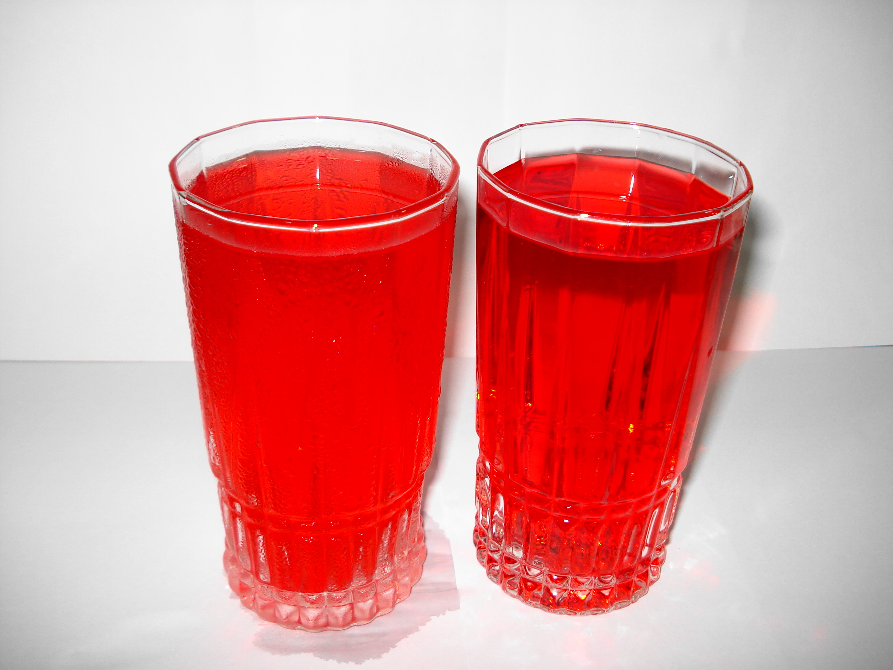

By Miansari66 - Own work, CC0, https://commons.wikimedia.org/w/index.php?curid=19655745
Rooh Afza is a deep red syrup often drunk in summers after mixing it in water. It does not require much work to make, and is very tasty.